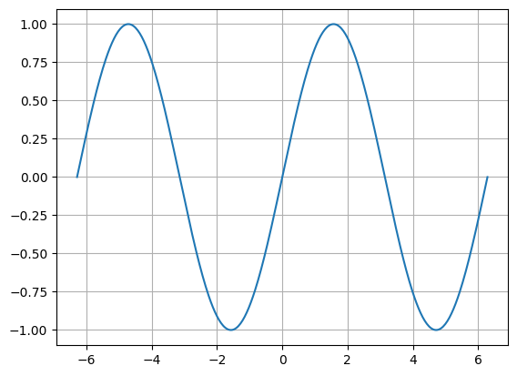
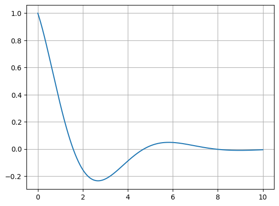

2.15 Построение графиков функций
Основные шаги построения
Чтобы построить график функции вручную, обычно следуют таким этапам:
- Найдите область определения \(D\). Учитывайте и исключайте точки разрыва и асимптоты.
- Определите пересечения с осями: \(x\)- и \(y\)-пересечения.
- Исследуйте монотонность и экстремумы (через первую производную \(f'\)).
- Найдите точки перегиба и интервалы выпуклости/вогнутости (через вторую производную \(f''\)).
- При необходимости вычислите асимптоты и поведение на бесконечности.
- Составьте таблицу значений и нанесите несколько точек.
- Соедините их плавной кривой, учитывая известные свойства.
Пример 1: sin(x)
Функция \( f(x) = \sin x \) периодична с периодом \(2\pi\). Пересечения: \(\sin x=0\) при \(x=k\pi\). Экстремумы: максимум \(+1\) при \(x=\pi/2+2k\pi\), минимум \(-1\) при \(x=3\pi/2+2k\pi\).
Рис. 1. График \(f(x)=\sin x\) на интервале \([-2\pi,2\pi]\).
Пример 2: экспонента с затуханием
Рассмотрим \( g(x) = e^{-0.5x}\cos x \). Эта функция сочетает затухающую экспоненту и колебания косинуса. Область определения: всё \(\mathbb{R}\). При \(x\to +\infty\) амплитуда стремится к нулю.
Рис. 2. График \(g(x)=e^{-0.5x}\cos x\) на интервале \([0,10]\).